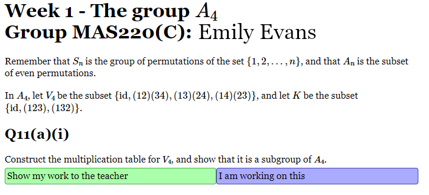

Sangaku help
Sangaku is a system for managing online tutorials. (It is named
after a kind of Japanese geometrical problem.) You should first log
in to Blackboard Collaborate, as you do for other tutorials. In the
Blackboard Collaborate chat panel, the tutor will share a specific
Sangaku URL for the session in question. You should follow that
link, and log in using your usual university username and password.
Then you will see a page that looks something like this:

Initially, just the first question on the problem sheet is shown.
You should work on the problem until you finish it or get stuck.
Then you can hover over "I am working on this" and you will see the
following options:
- I have finished and am happy with my answer
- I have finished and want to check my answer
- I am stuck and would like some help
- I am stuck and just want to move on
- I want to skip this and try the next question
If you choose an option that indicates that that you want to go on
to the next question, then the next question will be shown.
If you are stuck, or if you want a tutor to check your work, then
you can click on "Show my work to the teacher". This will reveal
several options:
- There is a box in which you can just type. If you know LaTeX,
then you can use LaTeX for mathematical expressions, but it is
usually possible to do without it.
- You can take a picture of your work with your webcam.
- There is a QR code that you can scan with your phone. Then you
can take a picture with your phone camera and it will be uploaded
to the right place.
- You can upload a file from your computer.
(Note: If you select "I am stuck and would like some help",
then you should always upload something at the same time, otherwise
the tutors will not know what you are stuck on.)
After you have uploaded something, the tutors will see a
notification of that. When they respond, you will also see a
notification at the top of the page.
As the tutorial proceeds, tutors may choose to reveal solutions to
some or all of the questions. These will then appear automatically
in the page that you are looking at.
For some tutorials, there may also be a link at the top of the page
to a gallery of visualiser snapshots, where you can see things that
the tutor has written earlier in the session.